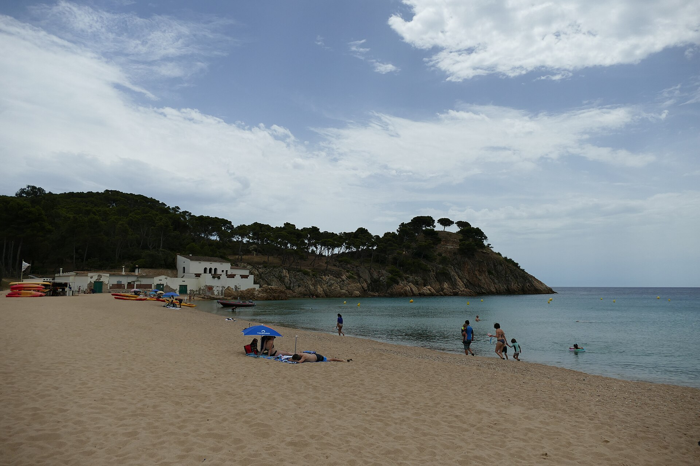
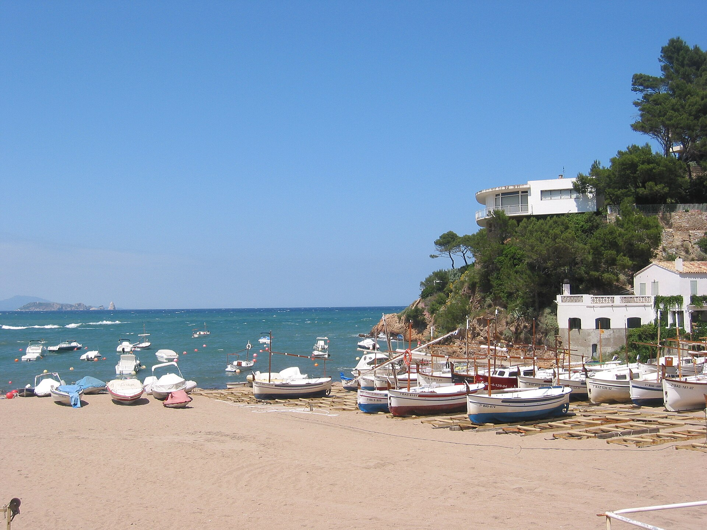

A fourteen-day family route from city streets to the Mediterranean, ending with Estelle’s family at Bigotis Del Gat.
Dates20 August to 2 September 2026
Stays3 Girona / 7 coast / 3 Falset
Travellers4 families / 2 adults / 8 children
01
Girona20 to 22 August / 3 nights
02
Camping Palafrugell23 to 29 August / 7 nights
03
Falset30 August to 2 September / 3 nights
The shape of the trip
Fourteen days, arranged around the water.
Girona first, while everyone still has city legs. A full week at Camping Palafrugell for beaches and unplanned afternoons. Then Falset, family and the vineyard before the flight home.
This is a framework, not a timetable. On the coast, calm water and rested children take priority over the planned order.
Calella de PalafrugellOur first swim after checking in at Camping Palafrugell
Day by day
The working plan
Times are deliberately loose. Each day includes the meal plan, travel, parking and the part most likely to need booking.
I
20 to 22 August / 3 nights
Girona
A compact city stay with one proper swim day before moving to the coast.
Thursday20August
London / Barcelona / Girona
London to Girona
Keep the first evening functional: land, collect the car, feed everyone and settle in.
Heathrow lounge
Use the two Platinum Amex cards after security. Check the chosen lounge’s guest and child rules before travel.
British Airways to Barcelona
Direct flight, 2 hr 20 min. Scheduled arrival at 18:35 local time.
Car and Girona transfer
Allow 1 hr 20 to 30 min for the drive after the car handover.
Dinner near the stay
Pizza, tapas or takeaway. Do not build the first night around a long booking.
Parking, packing and booking
ParkingPre-arrange parking outside the pedestrian old quarter.
PackMedicines, sleepwear and children’s car snacks stay accessible.
BookConfirm late check-in, car seats and Amex lounge eligibility.
Girona / night 1 of 3
Friday21August
Girona old town
Old walls and the Onyar
A city loop that can be shortened without spoiling it: bridges, the Jewish Quarter and one section of the walls.
Onyar and old town
Cross the river bridges and take the narrow lanes before the heat builds.
Lunch
Choose a shaded terrace around Plaça de la Independència or assemble a market picnic.
Return and rest
Pool or quiet time, then a short wall section after 17:00 if everyone wants it.
Dinner in the old town
Reserve one family-friendly terrace for ten, followed by gelato near the river.
Walking and practical notes
WalkingExpect cobbles and steps. Aim for 2 to 4 km, not the entire wall circuit.
ParkingLeave the car where it is.
PackHats, water and shoes with grip.
Girona walls / steps optional
Saturday22August
Lake Banyoles
Fresh water outside the city
A 25 to 30 minute drive for a designated lake swim and a short, flat section of the shore path.
Drive to Banyoles
Park near the eastern shore and identify the legal bathing area before settling.
Lake swim
Swim only in a designated area. A short boat hire can replace the walk if available.
Lunch by the lake
Bring a substantial picnic or use a café near the eastern shore.
Dinner in Girona
Return early enough for downtime and an uncomplicated final city supper.
Swimming and practical notes
SwimmingUse approved zones only and check access on the day.
WalkingThe full circuit is about 8 km. Do a family-sized section.
PackTowels, shade, swim kit and picnic.
Banyoles / 25 to 30 min from Girona
II
23 to 29 August / 7 nights
Camping Palafrugell
The centre of the holiday. Beach mornings, long lunches and enough time at camp to avoid turning leisure into logistics.
Sunday23August
Girona / Camping Palafrugell / Calella
Move to the coast
Check in, unpack once and keep the first saltwater swim close and undemanding.
Girona to camp
Allow 50 to 60 min, then make beds and establish the shared food shelf.
Lunch at camp
Bread, cheese, fruit and cold food while everyone gets oriented.
Calella first swim
Use Port Bo or El Canadell for a low-pressure beach afternoon.
Dinner at camp
Barbecue or simple pasta. Add ice cream in Calella only if energy survives.
Arrival and practical notes
ParkingUnload at camp, then use signed village parking for Calella.
WalkingEasy village paths with some slopes and beach steps.
PackKeep one swim bag on top of the luggage.
Camping Palafrugell / night 1 of 7
Monday24August
El Canadell / Llafranc
The coastal path to Llafranc
Start with a swim, then follow the manageable section of the coast path to lunch.
El Canadell
Set a clear beach base and snorkel only along the edge in calm conditions.
Walk to Llafranc
About 1.5 km each way. Allow 35 to 45 min with children and stops.
Lunch on the promenade
Reserve a table for rice, fish and straightforward children’s options.
Dinner at camp
Leftovers, salads and an early night after the walk.
Path and practical notes
WalkingPaved but stepped and exposed in places. Not pushchair-friendly throughout.
ParkingLeave the car at camp or use upper Calella parking.
BookReserve lunch for ten.
Llafranc / our best all-round beach
Tuesday25August
Tamariu
A proper snorkel morning
The compact cove makes it easier to keep a visible base while confident swimmers explore in pairs.
Drive to Tamariu
Allow 15 to 20 min and arrive before the parking becomes difficult.
Swim and snorkel
Use buddies, stay inside marked water and keep one adult on shore.
Lunch in Tamariu
Reserve a seafront table or bring a picnic for the simplest option.
Dinner at camp
Make this the shared barbecue evening.
Water and practical notes
ParkingUse signed parking about 5 min from the beach.
WalkingThe return is short but sloping.
PackMasks, rash vests, dry bag and water shoes.
Tamariu / best for snorkelling
Wednesday26August
Camp / Palafrugell
Nothing booked before dinner
Pool, laundry, games and an optional late-afternoon trip into Palafrugell. This is deliberately the quiet day.
Stay at camp
No alarm. Swim, read and give the car a rest.
Lunch in the shade
Tortilla, salad and fruit at camp.
Optional Palafrugell visit
Ice cream, the centre or the Cork Museum if the heat makes indoor time useful.
Dinner in Palafrugell
Book pizza or tapas, or stay at camp if nobody wants to move.
Low-effort notes
ParkingUse a central public car park if going into town.
WalkingEasy and entirely optional.
PackLaundry supplies, cards and sketchbooks.
Camp / night 4 of 7
Thursday27August
Cap Roig / Platja de Castell
Gardens, then a wide beach
A short cultural morning followed by enough sand for all ten of us to spread out.
Cap Roig Gardens
Take the shaded routes and let the children lead a photo hunt.
Picnic for Castell
Collect lunch, then drive about 20 min south.
Platja de Castell
Swim, play and let the afternoon stay unstructured.
Dinner at camp
Simple grill and salads after the drive back.
Parking and practical notes
ParkingUse the garden car park, then the signed paid car park near Castell.
WalkingModerate garden slopes, then a straightforward beach approach.
BookAdvance garden tickets are sensible.

Platja de Castell / best wild beach
Friday28August
Aiguablava / Begur
The early-start beach
Aiguablava is the most beautiful option and the least forgiving if we arrive late.
Leave camp
Allow 25 to 30 min on local roads and follow live parking controls.
Swim and snorkel
Use a bright meeting marker and explore rocky edges only when the water is calm.
Lunch
Book near the beach or drive up to Begur for more choice.
Dinner at camp
Keep the evening light after the busiest beach morning.
Access and practical notes
ParkingAccess can close when full. Never depend on roadside space.
WalkingShort but sloping from the parking area.
FallbackUse Tamariu or the camp pool if access is full.
Aiguablava / leave camp at 08:15
Saturday29August
Sa Riera
Space for the final beach day
Begur’s largest cove gives the group more room, useful facilities and an easy final swim before packing.
Drive to Sa Riera
Allow 25 to 30 min and arrive before the Saturday rush.
Beach morning
Build one clear base and rotate adults between water and shade.
Lunch at Sa Riera
Reserve a relaxed terrace or bring a beach picnic.
Return and farewell dinner
Dry the beach kit, use up the camp food and pack after the children settle.
Parking and practical notes
ParkingFollow signed local parking and keep a backup beach in mind.
WalkingEasy beach access. The optional coast path adds steps.
BookReserve lunch for ten.

Sa Riera / camp night 7 of 7
Six useful answers
Choose the beach by mood.
The itinerary is not a ranking. This is the quick decision tool when we need to change the plan.